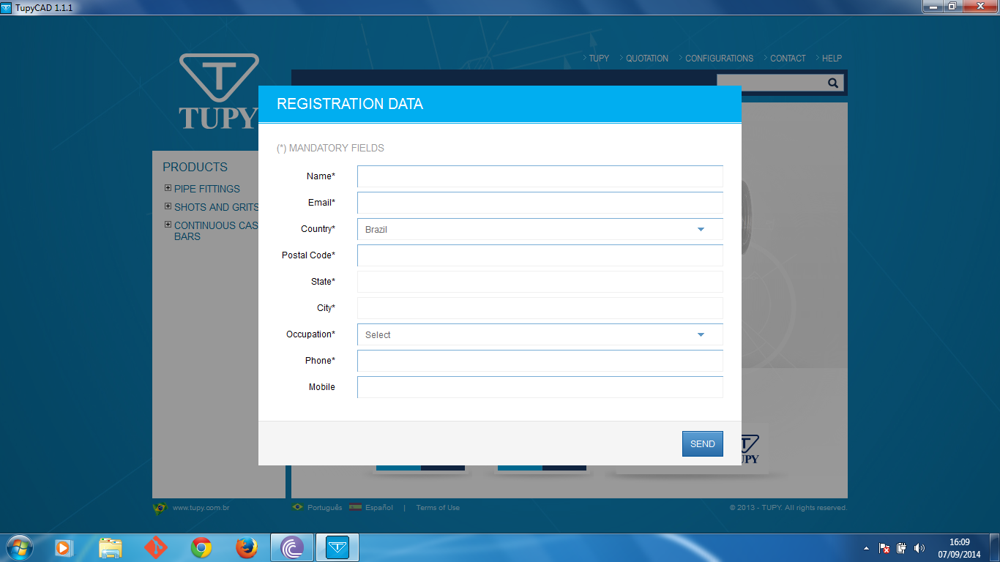

<div class="portfolio-single container">
        
    <div class="row">

        <div class="span8 portfolio-field portfolio-title">
            <h2>Qt and Webkit</h2>
        </div>

        <div class="span4 portfolio-field portfolio-nav">
            <a class="icon button prev ajax" href="portfolio-item-node.html"></a>
            <a class="icon button back" href="#/portfolio">close</a>
            <a class="icon button next ajax" href="portfolio-item-ios.html"></a>
        </div>

        <div class="span8 portfolio-field">
            
        </div>

        <div class="span4 portfolio-field">
            
            <h3>Description</h3>
            
            <p>I am not allowed to publish the case here, but the main goal was to develop a multiplatform (Windows and MAC) catalog and a AutoCAD plugin. Using C++ and Qt to emulate the webkit, me and a extraordinary team see that we end up with a powerfull layer to communicate and interoperate HTLM and Javascript templates with C++ capabilities. This contributed a lot for my expertise in C++ and low level deployment.</p>
            
            <h3>Technology</h3>
            <ul class="tags">
                <li><a>C++</a></li>
                <li><a>Qt</a></li>
                <li><a>Webkit</a></li>
                <li><a>HTML/CSS</a></li>
                <li><a>Team Work</a></li>
            </ul>
            
            <div class="launch">
                <a href="http://awesomium.com/" target="_blank" class="btn">LOOKS LIKE</a>
            </div>
        </div>

        <div class="span12 portfolio-field portfolio-nav bottom">
            <a class="icon button prev ajax" href="portfolio-item-node.html"></a>
            <a class="icon button back" href="#/portfolio">close</a>
            <a class="icon button next ajax" href="portfolio-item-ios.html"></a>
        </div>

    </div>
</div>